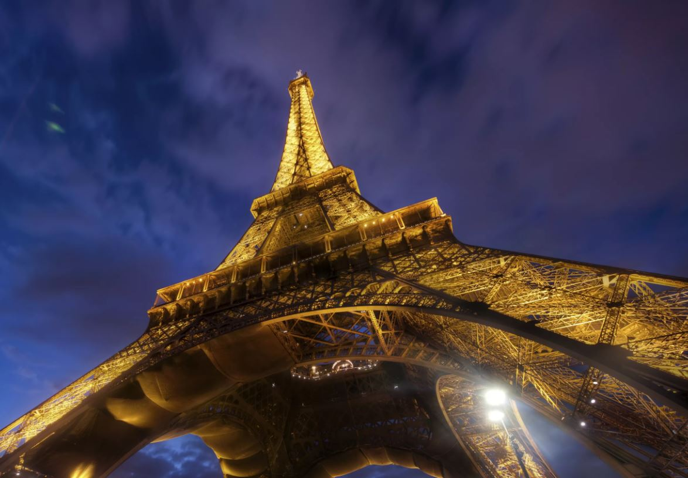

Инструкция:
При наведении курсора на изображение применяется эффект старой фотографии, чем правее ваш курсор, тем сильнее работает фильтр.
При наведении курсора с нажатой клавишей Ctrl изменится оттенок серого, Alt произойдет инверсия цвета, Shift изменится яркость.
При наведении курсора на изображение применяется эффект старой фотографии, чем правее ваш курсор, тем сильнее работает фильтр.
При наведении курсора с нажатой клавишей Ctrl изменится оттенок серого, Alt произойдет инверсия цвета, Shift изменится яркость.

Название фильтра: нет
Интенсивность применения: нет
Интенсивность применения: нет